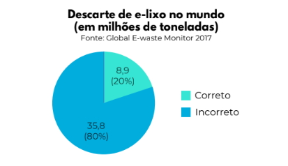

Login
O que é Lixo Eletrônico?
Lixo eletrônico, ou e-lixo, inclui todos os dispositivos eletrônicos que são descartados e não têm mais utilidade. Com o aumento do consumo de produtos tecnológicos, o volume de lixo eletrônico cresce a cada ano, gerando impactos ambientais significativos quando descartados de forma inadequada.
É essencial que os resíduos eletrônicos sejam descartados em locais apropriados para que possam ser reciclados ou processados de forma segura, contribuindo para a preservação do meio ambiente.
Você sabia?
Aqui na UTFPR, há locais designados para o descarte de lixo eletrônico. Aproveite essa opção para descartar seus dispositivos de forma responsável!
Dados sobre Lixo Eletrônico
O lixo eletrônico é um problema crescente. Aqui estão alguns dados importantes:
- Em 2020, o mundo gerou cerca de 53,6 milhões de toneladas de lixo eletrônico.
- Menos de 20% desse lixo foi reciclado adequadamente.
- Os resíduos eletrônicos contêm substâncias tóxicas, como mercúrio e chumbo.
- Estima-se que, até 2030, a quantidade de lixo eletrônico aumente em 21%.
Descarte de e-lixo no mundo
Como Descartar Corretamente?
- Separe os aparelhos eletrônicos que não funcionam mais e leve-os a pontos de coleta especializados.
- Verifique se lojas de eletrônicos ou supermercados próximos oferecem serviços de coleta de e-lixo.
- Nunca jogue equipamentos eletrônicos no lixo comum. Eles podem conter substâncias tóxicas.
- Doe aparelhos que ainda funcionam para instituições ou pessoas que possam utilizá-los.
Faça a Diferença!
Sabia que cada aparelho eletrônico descartado de forma inadequada pode causar sérios danos ao meio ambiente e à saúde?
Não deixe que seus eletrônicos acabem em aterros, poluindo nosso planeta.
Você pode ser parte da solução! Comece a descartar corretamente e ajude a preservar o futuro do nosso planeta.
Descubra como fazer a sua parte no eCycle.